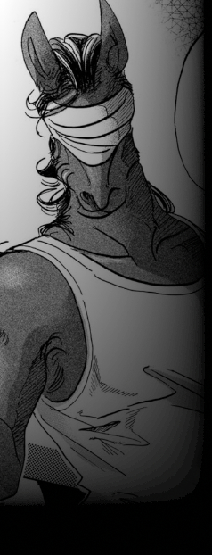

▼【 能力者解放戦線 】
ラグナロク以前から存在し、能力者差別撤廃の運動を武力闘争で行う過激団体。
キーワードは【差別解放】【革命】。
前身となったのはトランサーを軸とした反差別団体。
当時はまだ武装闘争などは行っていなかったが、ラグナロク前後でノーマル・能力者間の摩擦が肥大化していった背景から
先鋭化、現在の武力革命組織に至った。
特に能力者革命を掲げた【テセウス】のラグナロク敗北、【グングニル】への服従宣言は彼らに大きな衝撃を与え、
これを契機にオルレアン・テセウスとは完全に袂を分かっている。
その性質上参加者の大半は能力者だが、中でも外見の変化から最も差別を受けやすいトランサーが大部分を占める。
中下層へ落とされた能力者やその関係者など、上層のノーマル主義下で不当に扱われた者たちも多い。
グングニル下に組み込まれたオルレアンやテセウスの離反者も多く受け入れる一方で、
その逆、つまり活動の先鋭化についていけなくなった者がオルレアン等へ鞍替えするといった現象も起こっている。
主な活動内容は現状のノーマル体制と特区エデンの解体を目標としたテロ・ゲリラ。
代表者【ヤフヤ】はグングニルにより投獄されており、彼の解放も当面の目標の一つである。
代表者不在の元、規模だけは拡大し組織の収拾がついていない事や、
一斉摘発を回避するためにそれぞれで潜伏している事などにより、具体的な規模は不明。
監視の厳しい上層や能力者差別の少ない下層には少なく、中層を活動の拠点とする。
|

|
ヤフヤ
男性 ５１歳
能力タイプ トランサー
能力名 壮獣ビースター
能力者解放戦線の現代表。
完全なミュータントであるため常に馬人の状態で、人間態に戻る事ができない。
（物理的に）視野が広すぎるため、平素は目隠しをされている。
異能主義者であり、現在の武力による闘争を推し進めた人物。
ラグナロク以後の活動でグングニルに確保され、現在投獄の身である。
一方、投獄により彼は神格化され、能力者解放戦線の活動や思想はさらに活発化・先鋭化を遂げることになった。
|
|